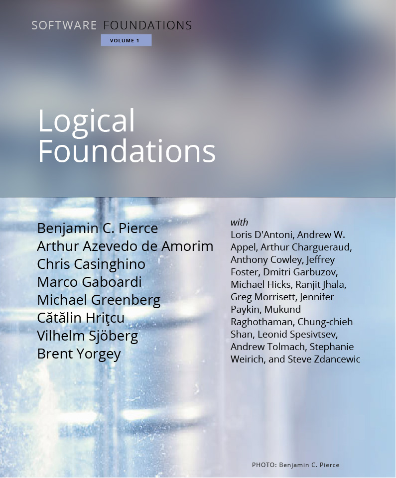
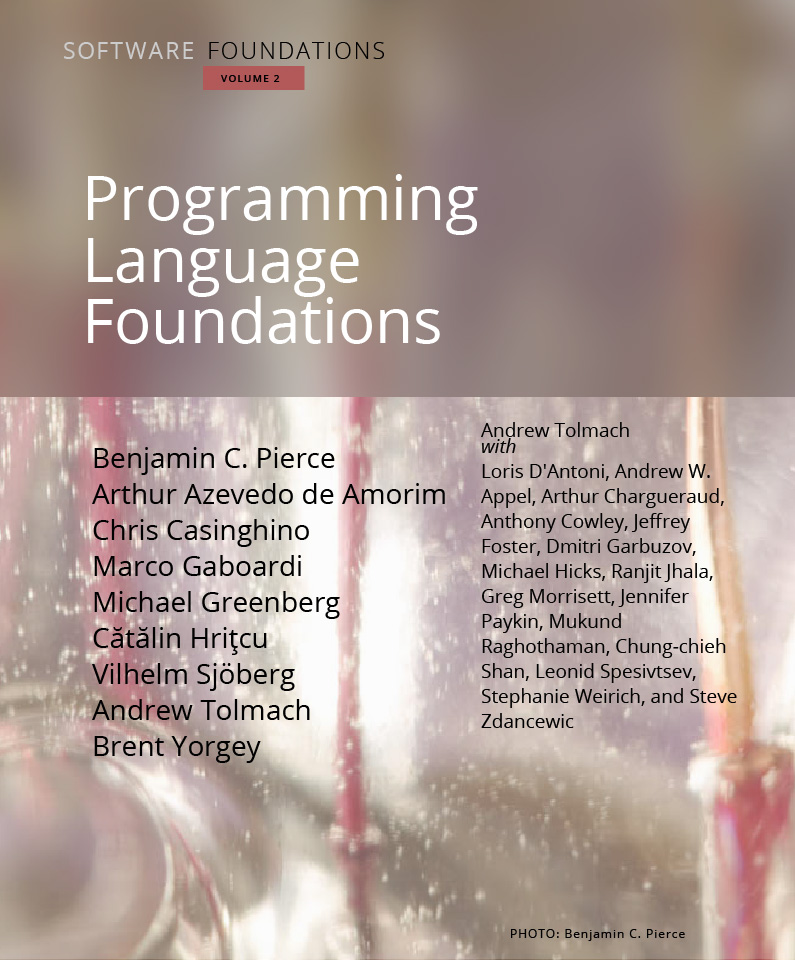
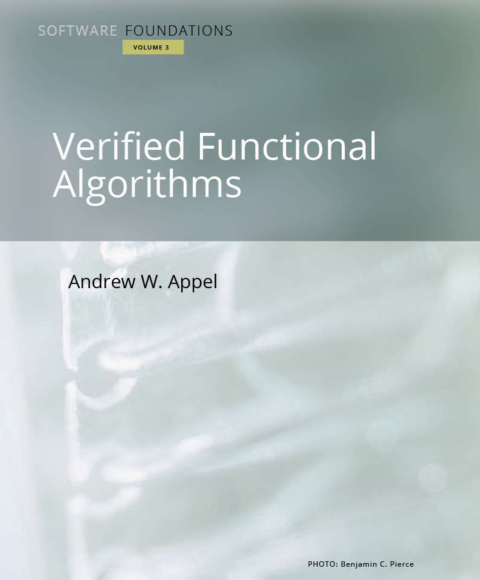
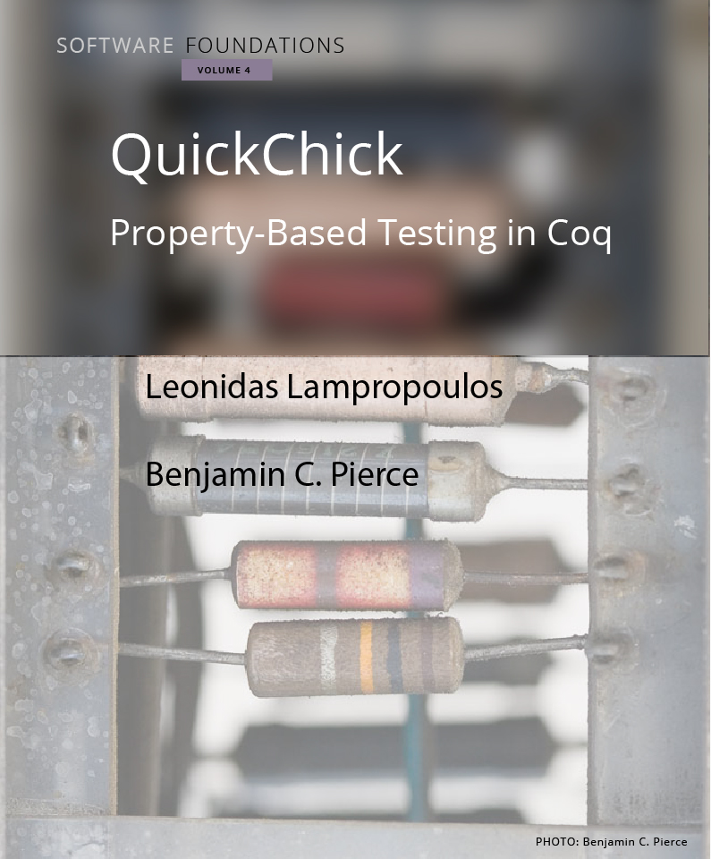
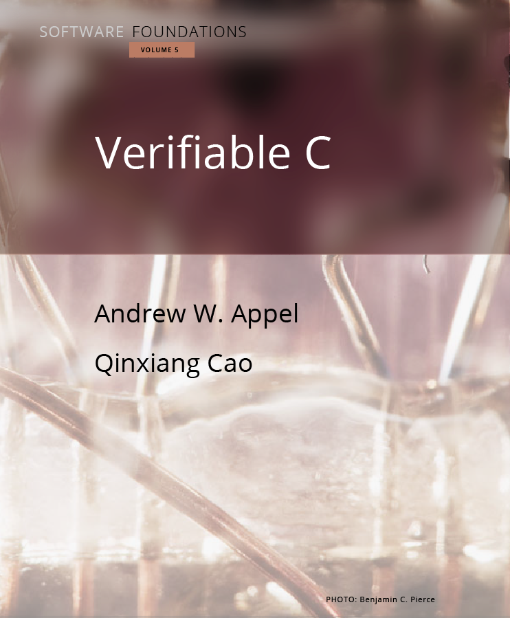

《软件基础》系列广泛介绍了可靠软件的数学基础。
本系列书籍最主要的创新之处在于，书中的每一处细节都百分之百地形式化且通过了机器验证。 每卷书中的所有文本，包括练习，都是一份 Coq 证明助手的「证明脚本」。
本系列书籍的目标受众包括从高年级本科生到博士以及研究者在内的广大读者。 书中并未假定读者有逻辑学或编程语言的背景，不过一定的数学熟练度会很有帮助。 一学期的课程可以涵盖《逻辑基础》加上《编程语言基础》 或《函数式算法验证》中的大部分内容，当然也可以从二者中选取一些内容。
| 第一卷 |
|
《逻辑基础》为本系列书籍的切入点。它涵盖了函数式编程、逻辑的基本概念、计算机辅助定理证明以及 Coq 证明助理。  |
| 第二卷 |
|
《编程语言基础》考察了编程语言理论，包括操作语义、霍尔逻辑以及静态类型系统。  |
| 第三卷 |
|
《函数式算法验证》展示了如何对各种基础数据结构进行机器验证。  |
| 第四卷 |
|
《QuickChick：用 Coq 进行基于性质的测试》介绍了将随机化基于性质的测试（Property-Based Testing）与 Coq 生态系统中的形式化规范和证明相结合的工具和技术。  |
| 第五卷 |
|
《可验证的 C》 是一本内容详尽的实战教程，它介绍了如何使用普林斯顿验证软件工具链（Princeton Verified Software Toolchain）为现实世界的 C 程序制定规范并验证。  |